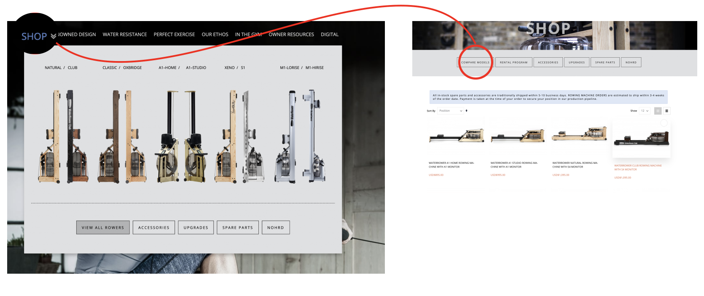
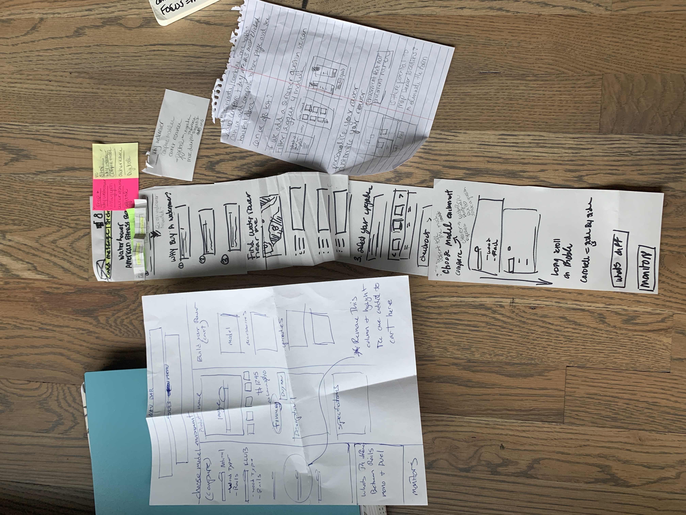

WaterRower
A well-known brand since 1998, WaterRower makes top-quality rowing machines. Yet today with the 12 models sold on our US website - few can understand the differences. Customer service was being bombarded with calls to clarify model differences rather than finding what they need on the website.
Task
Help clarify the differences between the WaterRower models and improve the flow of how they find this information.
Research Process
- 


-
10 remote usability tests were conducted to glean insight into how participants were interacting with the website and buying their WaterRower. When making larger purchases compare pages are key especially with the unlimited amount of options online. Our compare page was in-page, not visible in our navigation. Many participants were frustrated at the visibility of the compare page, they were unable to locate it in the menu and when they did find it the information was not clear.
-
Mouseflow was used to track user behavior and see which devices were being used.39% of users are desktop which statistically is where more conversions occur due to the larger screen and the tendency to be stationary and focused while they are in front of it. 61% were mobile users which is harder to convert because of the smaller screen and limited attention span, and limited preparedness to purchase.
-
Ultimately the biggest confusion with the current site is the navigation structure and content. Because the terms and navigation were not what customers expected they had a hard time finding what they needed and if they found the information they needed it was presented in a way that was confusing/lacking.
Design Process
- 


-
As our userbase was predominantly using mobile devices I wanted to create a design that was focused on small screens. As well as clarify and audit the information architecture for the compare models page.
-
There were three major issues with the current compare page making users feel confused and frustrated during their shopping. Accessing the compare page was difficult to find as it was in page navigation under shop, there was no back button so you felt trapped. Accessibility standards were not met. Users would look for the weight limit on a machine and find the weight of the machine instead and then they couldn't locate it anywhere else on the site. Finally, for the top four machines, all of the spec information was the same the only change was the wood, and when you arrive on the compare page the first side by side is showing the same machine on either side. Not to mention the layout was not well worked on mobile.
-
Users needed to be able to understand the differences between each model and provide clear groups of information where they would locate key information such as user weight limits. Designing for mobile first I grouped the wooden machines into one family as they all were the same specs except for the wood type. We also added a modal that would further explain the differences between the wood types and finishes of models in the same family as well. The four families were able to be toggled with an off-screen menu and horizontally scrollable on mobile when the overflow was out of view. Grouping similar models solved the confusion and cognitive overload of seeing all ten machines upfront. Now users can digest the information easier.
Delivery Process
.png)

-
The Final Result was to create four families of rower types to group the machines into. This way it was easier to describe and digest on mobile. We did a deep dive into each category and define its unique nature.
-
View Prototype